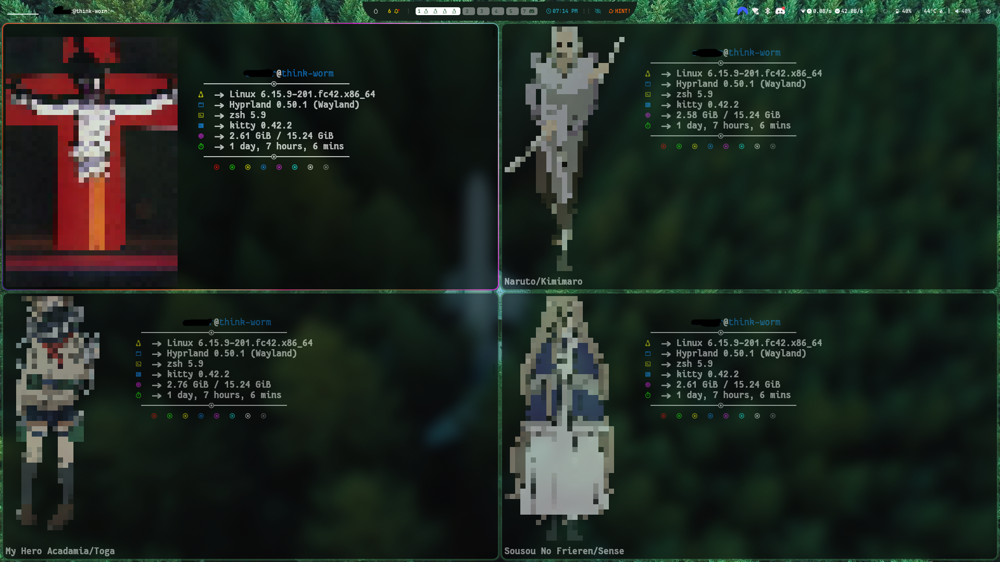
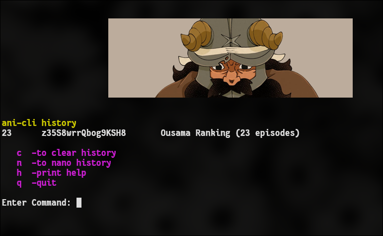

Linux//hyprland
Configs//Customizations
+ mametchi
sept 24,2025
move mametchi with WASD on the keyboard
or with the buttons

--mametchi is just a javascript experiment I tried for fun--
--real post starts below--
| OS: | Fedora Linux 42 Workstation |
| HOST: | Thinkpad T490 |
| KERNEL: | Linux 6.16.8 |
| PACKAGES: | 3598 (rpm), 9 (flatpak) |
| SHELL: | zsh 5.9 |
| WM: | Hyprland 0.51.1 |
| TERMINAL: | kitty 0.42.2 |
| CPU: | Intel i5-8365U @ 4.10 GHz |
| GPU: | Intel Graphics 620 @ 1.10 GHz |
| MEMORY: | 23.09 GB |
| DISK: | 236.89 GB |
TERMINAL
I had been using my bash script to cat a random ansi pixel character beside fastfetch every time I open terminal, but I discovered recently that the terminal I use "kitty" is able to display actual images as well so I tried experimenting with that. As it stands now I'm not sure which I like more. I think I'll make a button to go on my waybar that will change which set up to use. pixel on the left or image on top. They both look really nice to me.
for more info about my pixel art here, see "Scripts -> worm colour script" from my main page
I love the name kitty for a terminal. Since terminal emulators are "tty" emulators (short for teletypewriter). Even more fun instead of using the 'cat' command (short for 'concatenate'), kitty utilizes the command 'icat' (image cat)
So in kitty your command ends up being 'kitten icat file_name.jpg'. idk I just think thats really fun/cute word play
I've also considered keeping the pixel art for new terminal sessions and then use kitty's icat function for showing images as a sort of banner for all of my bash scripts I make. Kind of like this.
WAYBAR
I finally got around to playing about with some .config files for hyprland. It's fairly straight forward, and basically the same as designing websites using CSS. It's pretty fun. I love linux for how insanely customizable and free it is. Can do anything you dream of

Here I made a little worm button to go right on my waybar that executes a bash script I wrote. The script uses hyprctl to control the hyprland compositor, basically just opens various files/scripts and un-tiles them, then moves them into various positions I set. It's kind of like a screen saver in a way. Opens up my winamp playlist, pipes.sh, a terminal, a random image, and btop for system monitoring.

Here it is in action
for more info on this button see:
scripts -> hyprctl
Some other customizing I did on the waybar was increase font to make it easier to read and I made the battery % change color depending on % charge left, to make it more obvious I have to plug it in, because I ended up running it out of power a few times being absent minded lol.
I also deleted a few things and made it super minimal as well.
ROFI - Application Launcher

I also played around with the .config files for rofi application launcher. I think it turned out not bad. Just some small edits for now, my design skills aren't good enough to make something from scratch I'd be OK with having to look at regularly lol... (below) is what I based mine off of

HYPRLAND
I also found the spot in hyprland .config that dictates window spacing so I made it a little wider for the aesthetics, though I know it is completely useless and actually makes you waste some screen space -- but I like it. I think it looks really nice. If I had a bigger monitor I'd make it even wider lol. And those rounded corners on all the windows are so pretty too

SUMMARY
Thats the main jist of my customization I've done. I'm really happy with it but I am continueing to tweak things here and there every once and a while to suite my needs. Mostly feel too busy with other things I am working on. I have a few other config setups/rices that are pretty unique but I don't like them as a daily driver as much.
I've really enjoyed using a tiling window manager like hyprland. It's my first time using one and it just feels so good to use once you get the hang of it. I can see why some people wouldn't like them though theres a bit of a learning curve especially if you are used to using a stacking wm like the one Microsoft Windows OS's use. Doublly so if you have only used windows products for decades like I had lol
Did you make mametchi go all the way down here? lol